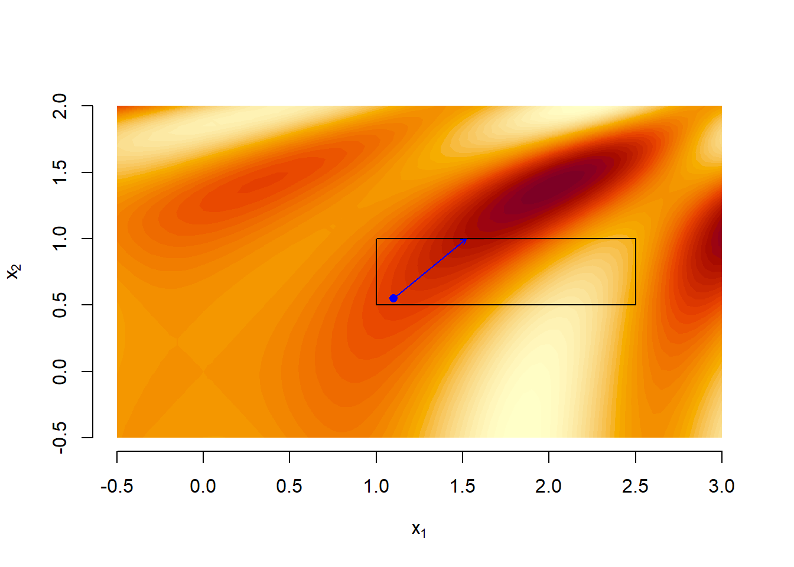
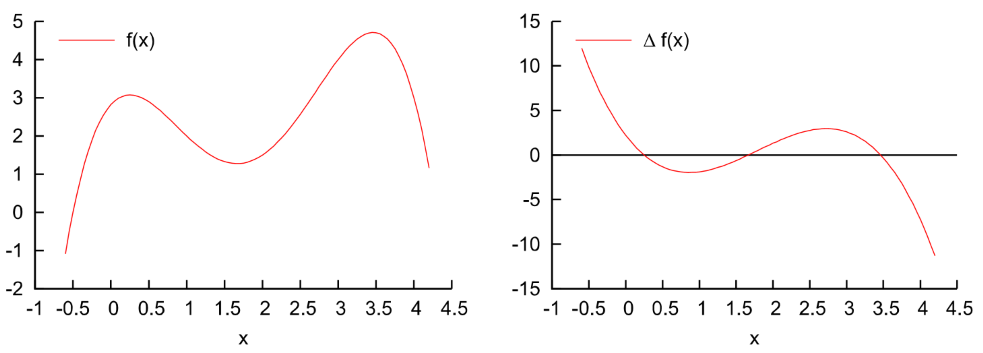
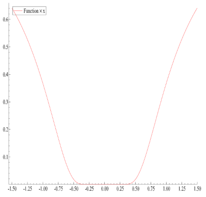
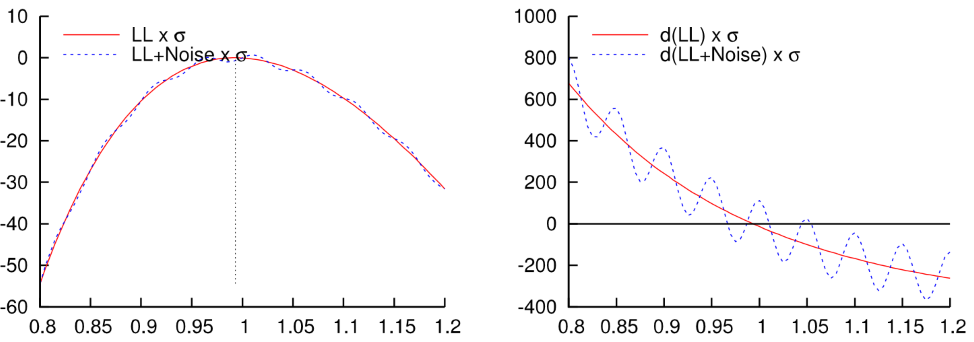
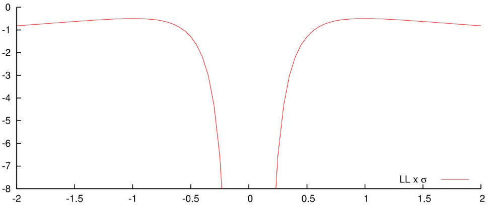
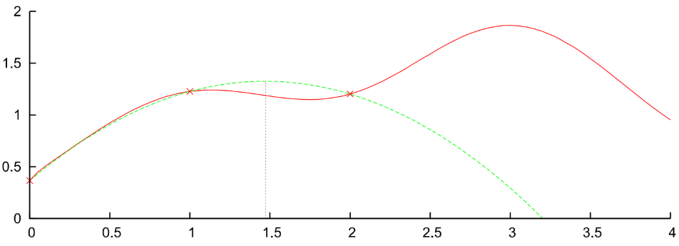

such that every time the function exits from the boundary, its value is increased by an amount that is proportional to the distance from the admissible set. We can then solve a sequence of optimization problems
We impose a very large cost on feasible points that lie close to the boundary since \(-\log(-g_i(\mathbf{x})) \to \infty\) as \(g_i(\mathbf{x}) \to 0^-\). We can then solve a sequence of optimization problems
So far we have considered the case where \(\mathbf{x} \in \mathbb{R}^p\), however, the most common scenario is when \(\mathbf{x} \in \mathcal{X} \subset \mathbb{R}^p\).
Newton-based method (method = "BFGS") doesn’t know about ranges
Alternative optimization (method = "L-BFGS-B") does but: slower/worse convergence
Consider for example the problem of estimating the location \(\mu\), scale \(\psi\) and degree of freedom parameters of a Student’s \(t\) distribution. Formally let \(\mathbf{y} = (y_1, ..., y_T)'\) a sample of \(T\) iid observations from a Student’s \(t\) distribution. The ML estimator for \(\mathbf{\theta} = (\mu, \psi, \nu)\) is:
where \(\Theta\) is the restricted space \(\mathbb{R} \times (0, \infty) \times (0, \infty)\).
We have two options:
Use a constrained optimizer like optim with method = "L-BFGS-B".
Reparameterize our problem and use an unrestricted optimizer.
The second option is usually preferred and provides better results.
10.5 Reparameterization
Let \(\mathbf{\lambda} : \mathbb{R}^p \rightarrow \Omega\) a vector-valued differentiable mapping function such that \(\mathbf{\lambda(\tilde{\theta})} = \mathbf{\theta}\) where \(\mathbf{\tilde{\theta}}\) is a reparametrization of \(\mathbf{\theta}\). In the Student’s \(t\) case \(\mathbf{\lambda(\cdot)}\) can be chosen as:
and then \(\mathbf{\theta}^{ML}=\lambda(\tilde{\mathbf{\theta}^{ML}})\). Which can be solved with an unconstrained optimizer like optim with method = "BFGS".
10.6 Differentiation after reparameterization: Delta method
Note however that the evaluation of the gradient and the hessian matrix needs to be modified after the reparameterization of the problem. We have the following identities:
Use \(\sigma \equiv |\theta|\) as parameter, ie forget the sign altogether (doesn’t matter for optimisation, interpret negative \(\sigma\) in outcome as positive value)
Transform, optimise \(\theta = \log \sigma \in (-\infty, \infty)\), no trouble for optimisation
Of course, to get a range of \([L, U]\), use a rescaled \([0, 1]\) transformation.
10.9 Code for constrained optimization
Click to view full code associated with the first part
# adapted code from last lecture ------------------------------------------#golden section gsection <-function(f, dX.l, dX.r, dX.m, dTol =1e-9, ...) {# golden ratio plus one dGR1 <-1+ (1+sqrt(5))/2# successively refine x.l, x.r, and x.m f.l <-f(dX.l, ...) f.r <-f(dX.r, ...) f.m <-f(dX.m, ...)while ((dX.r - dX.l) > dTol) { if ((dX.r - dX.m) > (dX.m - dX.l)) { # if the right segment is wider than the left dY <- dX.m + (dX.r - dX.m)/dGR1 # put Y into the right segment according to the golden ratio f.y <-f(dY, ...)if (f.y >= f.m) { dX.l <- dX.m f.l <- f.m dX.m <- dY f.m <- f.y } else { dX.r <- dY f.r <- f.y } } else { #if the left segment is wider than the right dY <- dX.m - (dX.m - dX.l)/dGR1 # put Y into the left segment according to the golden ratio f.y <-f(dY, ...)if (f.y >= f.m) { dX.r <- dX.m f.r <- f.m dX.m <- dY f.m <- f.y } else { dX.l <- dY f.l <- f.y } } }return(dX.m)}#line searchline.search <-function(f, vX, vG, dTol =1e-9, dA.max =2^5, ...) {# f is a real function that takes a vector of length d# x and y are vectors of length d# line.search uses gsection to find a >= 0 such that# g(a) = f(x + a*y) has a local maximum at a,# within a tolerance of tol# if no local max is found then we use 0 or a.max for a# the value returned is x + a*yif (sum(abs(vG)) ==0){return(vX) # +0*vG } # g(a) constant g <-function(dA, ...){return(f(vX + dA*vG, ...)) }# find a triple a.l < a.m < a.r such that# g(a.l) <= g(a.m) and g(a.m) >= g(a.r)# choose a.l dA.l <-0 g.l <-g(dA.l, ...)# find a.m dA.m <-1 g.m <-g(dA.m, ...)while ((g.m < g.l) & (dA.m > dTol)) { dA.m <- dA.m/2 g.m <-g(dA.m, ...) }# if a suitable a.m was not found then use 0 for a, so just return vX as the next stepif ((dA.m <= dTol) & (g.m < g.l)){return(vX) } # find a.r dA.r <-2*dA.m g.r <-g(dA.r, ...)while ((g.m < g.r) & (dA.r < dA.max)) { dA.m <- dA.r g.m <- g.r dA.r <-2*dA.m g.r <-g(dA.r, ...) }# if a suitable a.r was not found then use a.max for aif ((dA.r >= dA.max) & (g.m < g.r)){return(vX + dA.max*vG) } # apply golden-section algorithm to g to find a dA <-gsection(g, dA.l, dA.r, dA.m, ...)return(vX + dA*vG)}#ascent functionascent <-function(f, grad.f, vX0, dTol =1e-9, n.max =100, verbose =TRUE, ...) { vX.old <- vX0 vG0<-grad.f(vX0, ...) vX <-line.search(f, vX0, vG0, ...) n <-1while ((f(vX, ...) -f(vX.old, ...) > dTol) & (n < n.max)) { vX.old <- vX vG <-grad.f(vX, ...) vX <-line.search(f, vX, vG, ...)if(verbose){cat("at iteration", n, "the coordinates of x are", vX, "\n") } n <- n +1 }return(vX)}#functionf <-function(vX) { dOut =sin(vX[1]^2/2- vX[2]^2/4) *cos(2*vX[1] -exp(vX[2]))return(dOut)}# constrained with penalization -------------------------------------------#penalizion functionp<-function(vX, va, vb){ gX<-c(vX-vb, va-vX)return(sum(max(gX,0))^2)}#new penalized objectivef_p<-function(vX, dGamma, ...){return(f(vX)-dGamma*p(vX, ...)) #subtract the penalty since we're maximizing}library(numDeriv)grad.f_p<-function(vX, dGamma, ...){return(grad(func=f_p, x=vX, dGamma=dGamma, ...)) # using numerical derivatives here because I'm lazy}vx1 <-seq(-0.5, 3, 0.05)vx2 <-seq(-0.5, 2, 0.05)mf <-matrix(0, length(vx1), length(vx2))for(i in1:length(vx1)){for(j in1:length(vx2)){ mf[i,j]<-f(c(vx1[i], vx2[j])) }}{plot(NA,xlim=range(vx1),ylim=range(vx2),xlab=expression("x"[1]),ylab=expression("x"[2]),frame=FALSE) levels =pretty(range(mf), 50) color.palette =function(n) hcl.colors(n, "YlOrRd", rev =TRUE).filled.contour(x=vx1, y=vx2, z=mf,levels=levels,col=color.palette(length(levels) -1))}#choose upper and lower bounds va and vb, and draw the corresponding box constraint#this box doesn't contain any local minimum, so any solution will be on the borderva=c(1,0.5)vb=c(2.5,1)rect(xleft=va[1], ybottom=va[2], xright=vb[1], ytop=vb[2])#choose a point inside the box - penalty=0vX=c(1.5,0.75)points(vX[1],vX[2], col="blue", pch=16)p(vX, va, vb)#> [1] 0#point outside - penalty>0vX=c(0.5,0.75)points(vX[1],vX[2], col="green", pch=16)
p(vX, va, vb)#> [1] 0.25#plotting the solutions for different gamma_h{plot(NA,xlim=range(vx1),ylim=range(vx2),xlab=expression("x"[1]),ylab=expression("x"[2]),frame=FALSE) levels =pretty(range(mf), 50) color.palette =function(n) hcl.colors(n, "YlOrRd", rev =TRUE).filled.contour(x=vx1, y=vx2, z=mf,levels=levels,col=color.palette(length(levels) -1))rect(xleft=va[1], ybottom=va[2], xright=vb[1], ytop=vb[2])}vX0<-c(1.5,1.5)points(vX0[1],vX0[2], col="blue", pch=16)#gamma_h=0, no penalizationvX_star<-ascent(f_p, grad.f_p, vX0, verbose=FALSE, dGamma=0, va=va, vb=vb)arrows(x0=vX0[1], y0=vX0[2], x1=vX_star[1], y1=vX_star[2], length=0.05, col="blue")vX_old<-vX_star#gamma_h=1 vX_star<-ascent(f_p, grad.f_p, vX0=vX_old, verbose=FALSE, dGamma=1, va=va, vb=vb) #hot start: take the initial value equal to the last best guessarrows(x0=vX_old[1], y0=vX_old[2], x1=vX_star[1], y1=vX_star[2], length=0.05, col="blue") vX_old<-vX_star#gamma_h=10 vX_star<-ascent(f_p, grad.f_p, vX0=vX_old, verbose=FALSE, dGamma=10, va=va, vb=vb)arrows(x0=vX_old[1], y0=vX_old[2], x1=vX_star[1], y1=vX_star[2], length=0.05, col="blue") vX_old<-vX_star#gamma_h=100vX_star<-ascent(f_p, grad.f_p, vX0, verbose=FALSE, dGamma=100, va=va, vb=vb)arrows(x0=vX_old[1], y0=vX_old[2], x1=vX_star[1], y1=vX_star[2], length=0.05, col="blue")
#making a function that iterates like abovepenalized_ascent<-function(f_p, grad.f_p, vX0, epsilon_h =1e-9, h.max =100, verbose_ =TRUE, ...){#first iteration vXh <-ascent(f_p, grad.f_p, vX0, verbose=FALSE, dGamma=0, ...) vXh_old <- vX0 h <-1while( sum(abs(vXh - vXh_old)) > epsilon_h && h < h.max){ vXh_old <- vXh vXh <-ascent(f_p, grad.f_p, vXh_old, verbose=FALSE, dGamma=10^(h-1), ...) #gamma_h gets 10x bigger with every interationif(verbose_){cat("at iteration", h, "the coordinates of x are", vXh, "\n") } h <- h +1 }return(vXh)}#test out how it works for different starting values!{plot(NA,xlim=range(vx1),ylim=range(vx2),xlab=expression("x"[1]),ylab=expression("x"[2]),frame=FALSE) levels =pretty(range(mf), 50) color.palette =function(n) hcl.colors(n, "YlOrRd", rev =TRUE).filled.contour(x=vx1, y=vx2, z=mf,levels=levels,col=color.palette(length(levels) -1))rect(xleft=va[1], ybottom=va[2], xright=vb[1], ytop=vb[2])}vX0<-c(2.5,0)points(vX0[1],vX0[2], col="blue", pch=16)vX<-penalized_ascent(f_p, grad.f_p, vX0, va=va, vb=vb)#> at iteration 1 the coordinates of x are 3.024968 1.039979 #> at iteration 2 the coordinates of x are 1.629637 1.039826 #> at iteration 3 the coordinates of x are 1.593251 1.003943 #> at iteration 4 the coordinates of x are 1.589693 1.000394 #> at iteration 5 the coordinates of x are 1.589684 1.000039 #> at iteration 6 the coordinates of x are 1.589684 1.000004 #> at iteration 7 the coordinates of x are 1.589684 1 #> at iteration 8 the coordinates of x are 1.589684 1 #> at iteration 9 the coordinates of x are 1.589684 1arrows(x0=vX0[1], y0=vX0[2], x1=vX[1], y1=vX[2], length=0.05, col="blue")
# constrained with barrier ------------------------------------------------#barrier functionb<-function(vX, va, vb){ gX<-c(vX-vb, va-vX)if(all(gX<=0)){return(-sum(log(-gX))) }else{return(Inf) }}#new objective with a barrierf_b<-function(vX, dGamma, ...){return(f(vX)-dGamma*b(vX, ...)) #subtract the penalty since we're maximizing}grad.f_b<-function(vX, dGamma, ...){return(grad(func=f_p, x=vX, dGamma=dGamma, ...)) # using numerical derivatives here because I'm lazy}#plotting the solutions for different gamma_h{plot(NA,xlim=range(vx1),ylim=range(vx2),xlab=expression("x"[1]),ylab=expression("x"[2]),frame=FALSE) levels =pretty(range(mf), 50) color.palette =function(n) hcl.colors(n, "YlOrRd", rev =TRUE).filled.contour(x=vx1, y=vx2, z=mf,levels=levels,col=color.palette(length(levels) -1))rect(xleft=va[1], ybottom=va[2], xright=vb[1], ytop=vb[2])}vX0<-c(1.2,0.7) #start inside the boxpoints(vX0[1],vX0[2], col="blue", pch=16)#gamma_h=1vX_star<-ascent(f_b, grad.f_b, vX0, verbose=FALSE, dGamma=1, va=va, vb=vb)arrows(x0=vX0[1], y0=vX0[2], x1=vX_star[1], y1=vX_star[2], length=0.05, col="blue")vX_old<-vX_star#gamma_h=1/10vX_star<-ascent(f_b, grad.f_b, vX0=vX_old, verbose=FALSE, dGamma=1/10, va=va, vb=vb) #hot start: take the initial value equal to the last best guessarrows(x0=vX_old[1], y0=vX_old[2], x1=vX_star[1], y1=vX_star[2], length=0.05, col="blue") vX_old<-vX_star#gamma_h=1/100vX_star<-ascent(f_b, grad.f_b, vX0=vX_old, verbose=FALSE, dGamma=1/100, va=va, vb=vb)arrows(x0=vX_old[1], y0=vX_old[2], x1=vX_star[1], y1=vX_star[2], length=0.05, col="blue") vX_old<-vX_star#gamma_h=1/1000vX_star<-ascent(f_b, grad.f_b, vX0, verbose=FALSE, dGamma=1/1000, va=va, vb=vb)arrows(x0=vX_old[1], y0=vX_old[2], x1=vX_star[1], y1=vX_star[2], length=0.05, col="blue")
barrier_ascent<-function(f_b, grad.f_b, vX0, epsilon_h =1e-9, h.max =100, verbose_ =TRUE, ...){#first iteration vXb <-ascent(f_b, grad.f_b, vX0, verbose=FALSE, dGamma=1, ...) vXb_old <- vX0 h <-1while( sum(abs(vXb - vXb_old)) > epsilon_h && h < h.max){ vXb_old <- vXb vXb <-ascent(f_b, grad.f_b, vXb_old, verbose=FALSE, dGamma=10^(-h), ...) #gamma_h gets 10x smaller with every iterationif(verbose_){cat("at iteration", h, "the coordinates of x are", vXb, "\n") } h <- h +1 }return(vXb)}#test out how it works for different starting values!{plot(NA,xlim=range(vx1),ylim=range(vx2),xlab=expression("x"[1]),ylab=expression("x"[2]),frame=FALSE) levels =pretty(range(mf), 50) color.palette =function(n) hcl.colors(n, "YlOrRd", rev =TRUE).filled.contour(x=vx1, y=vx2, z=mf,levels=levels,col=color.palette(length(levels) -1))rect(xleft=va[1], ybottom=va[2], xright=vb[1], ytop=vb[2])}vX0<-c(1.1,0.55)points(vX0[1],vX0[2], col="blue", pch=16)vX<-barrier_ascent(f_b, grad.f_b, vX0, va=va, vb=vb)#> at iteration 1 the coordinates of x are 1.490837 0.8984811 #> at iteration 2 the coordinates of x are 1.506099 0.9881654 #> at iteration 3 the coordinates of x are 1.517451 0.9987611 #> at iteration 4 the coordinates of x are 1.518635 0.9998752 #> at iteration 5 the coordinates of x are 1.518754 0.9999875 #> at iteration 6 the coordinates of x are 1.518766 0.9999988 #> at iteration 7 the coordinates of x are 1.518767 0.9999999 #> at iteration 8 the coordinates of x are 1.518767 1 #> at iteration 9 the coordinates of x are 1.518767 1 #> at iteration 10 the coordinates of x are 1.518767 1 #> at iteration 11 the coordinates of x are 1.518767 1arrows(x0=vX0[1], y0=vX0[2], x1=vX[1], y1=vX[2], length=0.05, col="blue")

10.10 Pitfalls
There are some potential pitfalls with optimization routines in empirical practice. E.g, for local optima, different starting points may lead to different optima. A possible solution to this is simulated annealing which is a probabilistic technique for approximating the global optimum of a given function.

Pitfall 1
Another potential is related to flat surfaces: different starting points; transformation for parameter (\(\theta = \log{\sigma}\) tends to optimise a lot better…)

Pitfall 2
Noise on derivatives/function: Only smooth functions can be optimised using NR-approach. Use analytical derivatives. Robust programming of target function (optimise AVERAGE LOG likelihood, never likelihood itself).

Pitfall 3
Non-uniqueness of optimum/indeterminacy in model specification: Optimize \(\sigma\), both \(\sigma = -1\), \(\sigma = 1\) give same likelihood…

Pitfall 4
Bad Taylor-approximation: Sometimes transformation of parameters helps a bit, or it is just bad luck.

Pitfall 5
10.11 Problematic Hessian?
Algorithms based on NR need \(\mathbf{H}(x_n)\).
A problem with NR is that the Hessian matrix is not guaranteed to be non-singular. If it is (near) singular at any step, the search routine could either diverge or break down altogether. Problematic:
where \(\mathbf{y}_{n} = \nabla f(\mathbf{x}_{n+1}) - \nabla f(\mathbf{x}_{n})\)
When \(\mathbf{x}_{n+1}\) is close to \(\mathbf{x}_{n}\), then \(\mathbf{H}(\mathbf{x}_{n+1}) \approx \mathbf{M}_{n+1}\)
To determine \(\mathbf{M}_{n+1}\) uniquely, then, we impose the additional condition that among all symmetric matrices satisfying the secant equation, \(\mathbf{M}_{n+1}\) is, in some sense, closest to the current matrix \(\mathbf{M}_n\)
This produces a symmetric and positive definite matrix at each step if the initialization is a symmetric and positive definite matrix, like the identity matrix.
We can use the Sherman-Morrison formula to calculate \(\mathbf{M}_{n+1}^{-1}\) efficiently.
Result: * No Hessian needed * Still fast convergence * No problems with singular \(H_n\)